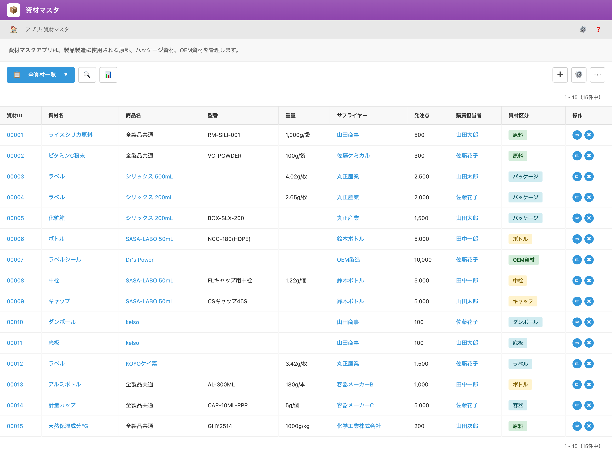

UI Spec
Material Master
Version 1.0 / 作成日: ________
UI Screen Specification – 資材マスタ（Material Master App）
対象画面: 資材マスタ（Material Master）一覧画面
想定利用者: 購買担当・倉庫担当・製造管理担当・管理者
1. 画面の目的（ビジネス上の役割）
本画面は、製品の製造に使用される資材（原料・ 包材・OEM資材）の
基盤マスタ（Single Source of Truth）として機能します。
仕入、在庫管理、製造指示、コスト計算など全工程に影響を与える重要なマスタです。
1.1 本画面が影響する領域
- 製造に必要な資材の在庫（論理在庫・実在庫）
- PO（購買）フローでの発注点・サプライヤー参照
- BOM 管理（製品に紐づく資材消費量）
- 受入（入庫）・出庫・棚卸ロジック
- 資材カテゴリ別のコスト分析
👉 結論: 資材マスタの誤りは、製造ミス・在庫ズレ・過剰在庫・発注漏れを引き起こすため、
Credie のサプライチェーン全体で最も重要なマスタのひとつです。
2. ユーザーストーリー（利用シナリオ）
2.1 購買担当のシナリオ
- 資材の安全在庫・発注点を確認し、PO を作成する
- サプライヤー別の価格比較や担当者を把握する
- 新しい資材（包材・原料）を登録する
2.2 倉庫担当のシナリオ
- 資材入庫時に型番・商品名・重量を参照する
- 棚卸時にマスタ情報で物理在庫を照合する
2.3 製造管理のシナリオ
- BOM アプリで資材を紐づけ、製造時の使用数量を確定する
- 資材カテゴリ別に製造計画を立てる
2.4 管理者のシナリオ
- 原料/包材カテゴリの分類見直し
- 廃盤時のステータス変更
3. 主要機能
3.1 資材一覧表示
- 資材名、型番、サプライヤー、発注点などを一覧表示
- Kintone 標準リストビュー（ソート・ページング）
3.2 検索 / フィルタ
- 資材名 / 型番 / カテゴリ検索が可能
- サプライヤーや担当者での絞り込み
3.3 新規登録
- 型番、重量、仕入先、発注点などの登録
- カテゴリ（原料/包材/OEM資材など）を紐付け
3.4 編集（Update）
3.5 ステータス管理
4. 画面レイアウトと項目
4.1 一覧画面（項目）
| 項目名 |
説明 |
| 資材ID |
内部一意ID |
| 資材名 |
資材の名称 |
| 商品名 |
関連する商品名 / 用途名 |
| 型番 |
メーカー/仕入先の型番 |
| 重量・容量 |
物流・在庫計算に使用 |
| サプライヤー |
仕入先名称 |
| 発注点 |
再補充を行う最小在庫ライン |
| 購買担当者 |
内部の担当者 |
| 資材区分 |
原料/包材/OEM/中栓/ボトルなど |
| 操作 |
詳細/編集/削除 |
4.2 画面イメージ（スクリーンショット）

図1. 資材マスタ（Material Master）一覧画面
5. お客様に確認いただきたい点
- 表示している項目は運用に必要十分ですか？
- 検索条件・絞り込み条件に不足はありませんか？
- 資材区分（カテゴリ）の分類は現場運用に適切ですか？
- 発注点の運用ルールに問題はありませんか？
6. ビジネス影響（Business Impacts）
- 誤った発注点 → 発注漏れ・欠品問題発生
- サプライヤー情報ミス → 発注遅延・仕入コスト上昇
- 重量/容量の誤り → 配送料計算ミス・棚卸ズレ
- カテゴリ分類ミス → 製造計画・BOM への影響
7. 対象範囲 / 非対象範囲（Scope / Out of Scope）
7.1 対象範囲
- 資材マスタの登録 / 更新 / 閲覧
- 発注点・仕入先・重量情報の管理
- 製造・購買とのデータ連携
7.2 非対象範囲
- 入庫・出庫処理（入出庫アプリが担当）
- BOM 作成（BOM アプリが担当）
- 在庫数量管理（Stock App / Physical DB が担当）
8. 開発向けメモ（内部用）
- Kintone 標準UIにカスタムCSS（kintone-common-v2.css）を適用
- 資材区分は後続ロジック（PO, BOM）でも利用
- ID体系と SKU/型番体系の整合性が必須